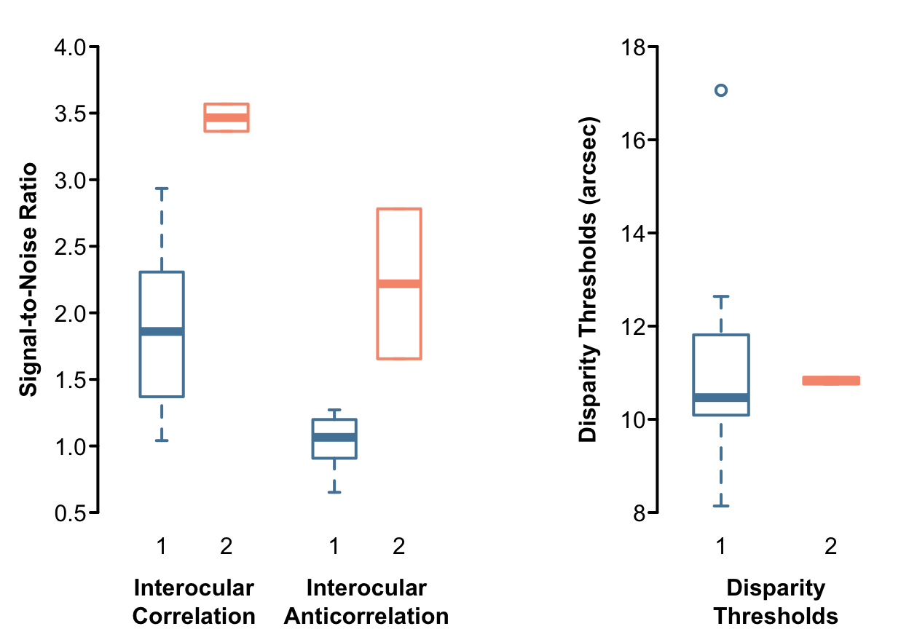
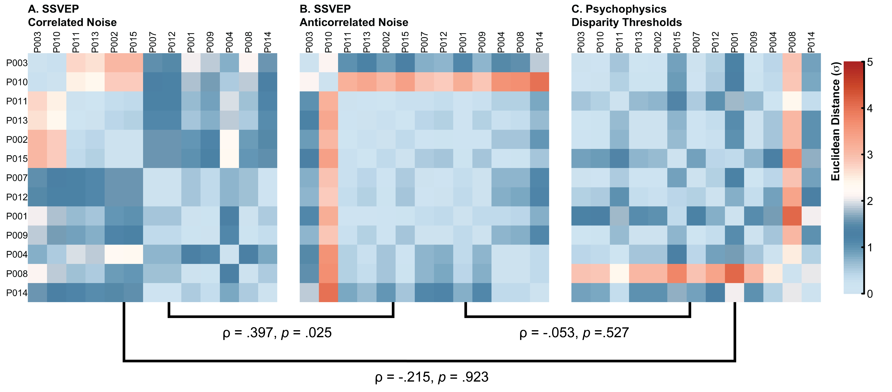
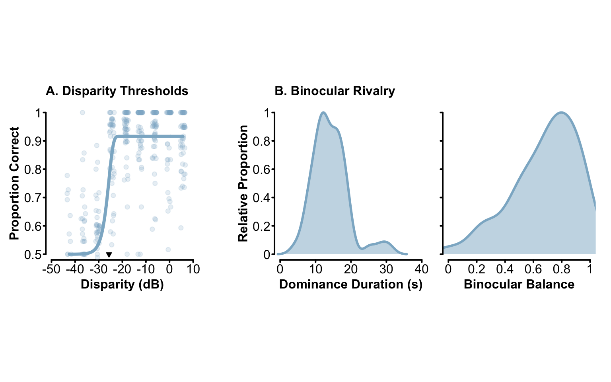
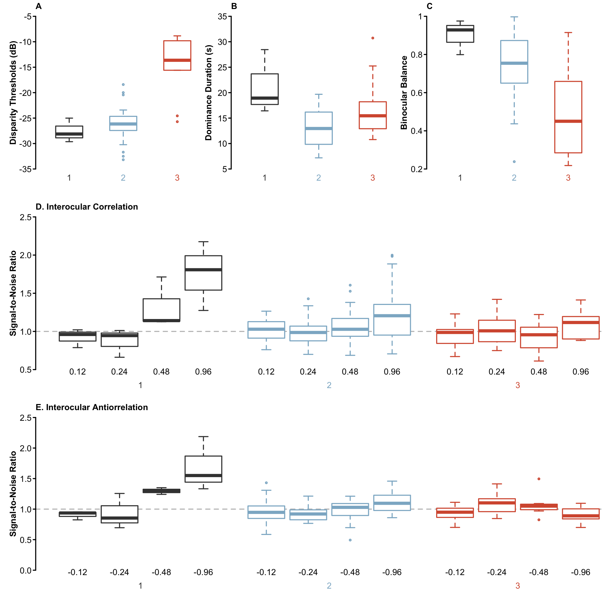
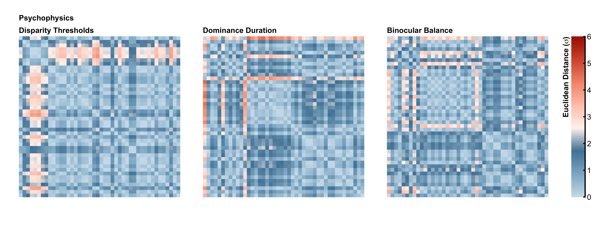

Neural responses to binocular correlated and anticorrelated noise stimuli
Abstract
The visual system encodes binocular signals via summing and differencing channels, yet the relative weighting of these pathways remains unclear. Here, we use Steady-State Visually Evoked Potentials (SSVEPs) to investigate the neural responses associated with summing and differencing mechanisms. In Experiment 1, we measured responses to binocular noise stimuli in 15 observers. Across the eyes, stimuli could oscillate (at 3Hz) from no correlation to perfect interocular correlation, from no correlation to perfect interocular anticorrelation (i.e., opposite interocular contrast), or no interocular correlation (i.e., the control condition). Responses to correlated stimuli showed a peak at the fundamental frequency (3Hz); however, we found no evidence of measurable responses to anticorrelation. In Experiment 2, we increased the sample size to 48 observers and measured SSVEPs in response to interocular correlation and anticorrelation while manipulating the degree of interocular correlation. The correlation between the left and right eye images could be ±0, 0.12, 0.24, 0.48, or 0.96. We found SSVEP responses at the fundamental frequency in both interocular correlation and anticorrelation conditions. Interocular correlation generated SSVEPs with a correlation of 0.48 or 0.96, while anticorrelation SSVEPs were only measurable at a correlation of -0.96. Signal-to-noise ratios were 1.15 times larger for the correlation condition than the anticorrelation condition. To determine the influence of individual differences on SSVEPs to interocular correlation, we collected psychophysical measures of binocular function and correlated them with neural responses. Two measures of binocularity were used: stereoacuity and binocular balance, which refers to the ratio of dominance duration in each eye during rivalry. We found only small associations between SSVEP magnitudes and psychophysical measures of binocularity (stereoacuity and binocular balance). We conclude that while neural responses to both correlation and anticorrelation can be recorded via SSVEPs, the latter requires high signal coherence and a large sample size.
1 Introduction
The human visual system is binocular, yet the perceptual experience is cyclopean. The visual system encodes binocular signals via summing and differencing channels (May and Zhaoping, 2016) , yet the relative weighting of these pathways remains unclear.
Interocular correlation as a method to target summing and differencing channels. That will require motivation.
Previous studies have demonstrated that humans can detect interocular correlation in broadband (Cormack et al., 1991; Julesz and Tyler, 1976) and bandpass (Reynaud and Hess, 2018) stimuli, with performance mediated by stimulus contrast. Early studies used random binary dots
Here, we use Steady-State Visually Evoked Potentials (SSVEPs) to investigate the neural responses associated with summing and differencing mechanisms.
Why would stereo matter? Or binocularity?
We present the findings of two studies in this manuscript. The first reports neural responses to interocular correlation in a small set of participants that were collected as part of a larger experiment (Richard and Baker, 2026). In the second, the sample size was increased
2 Experiment 1
2.1 Methods
2.1.1 Participants
Fifteen observers (\(N_{male} = 4\); age range [19 34]), including authors BR and DHB, participated in this study. All observers had normal or corrected-to-normal visual acuity, as verified by a Snellen chart, and normal binocular vision, as verified by a Titmus test. Two of the observers (participant 5 and 6) did not complete the behavioural portion of the experiment. Written informed consent was obtained from all participants, and experimental procedures were approved by the ethics committee of the Department of Psychology at the University of York.
2.1.2 Apparatus
All stimuli were presented using a gamma-corrected ViewPixx 3D display (VPixx Technologies, Canada) driven by a Mac Pro. Binocular separation with minimal crosstalk was achieved by synchronizing the display’s refresh rate with the toggling of a pair of Nvidia stereo shutter goggles using an infrared signal. The monitor refresh rate was set to 120 Hz; each eye updated at 60 Hz (every 16.67 msec). The display resolution was set to \(1920 \times 1080\) pixels. A single pixel subtended \(0.027^\circ\) of visual angle (1.63 arc min) when viewed from 57 cm. The mean luminance of the display viewed through the shutter goggles was 26 cd/m\(^2\). All stimuli were generated using (MathWorks, Natick, MA) and presented to observers using (Brainard, 1997; Kleiner et al., 2007; Pelli, 1997).
EEG signals were recorded from 64 electrodes distributed across the scalp according to the 10/20 EEG system (Chatrian et al., 1985) in a WaveGuard cap (ANT Neuro, Netherlands). We monitored eye blinks with an electrooculogram consisting of bipolar electrodes placed above the eyebrow and the cheek on the left side of the participant’s face. Stimulus-contingent triggers were sent from the ViewPixx display to the amplifier using a parallel cable. Signals were amplified and digitized using a PC with the ASAlab software (ANT Neuro, Netherlands). All EEG data were imported into MATLAB (Mathworks, MA, USA) using components of the toolbox (Delorme and Makeig, 2004) and then exported for subsequent offline analysis using R.
2.1.3 Stimuli
To aid with binocular fusion, all stimuli in this study were surrounded by a static binocular texture presented beyond the central 19\(\circ\) stimulus aperture (see Figure 1C). These textures were constructed by low-pass filtering a white (amplitude \(\propto 1/f^0\)) noise image, assigning a DC value of 0, transforming it into a binary image, and taking its phase spectrum. A second flat (amplitude \(\propto 1/f^0\)) was adjusted by multiplying each spatial frequency’s amplitude coefficient by \(f^{-1}\) to generate a pink amplitude spectrum (Hansen and Hess, 2006; Tadmor and Tolhurst, 1994). The pink amplitude spectrum and the phase spectrum of the binary image were combined and rendered in the spatial domain by taking the inverse Fourier transform. The surrounding texture was fixed during a trial, but its phase structure was changed across trials.
2.1.3.1 Interocular Correlation
Observer SSVEPs to interocular correlation and anticorrelation were measured with noise stimuli subtending \(15^\circ\) of visual angle on the retina. The visual noise stimuli were low-pass filtered (filter cut-off frequency of 3 cycles/\(^o\)) white noise images. The images were created by taking the Fourier transform of a random matrix and assigning a DC value of 0. Interocular correlation and anticorrelation were controlled by manipulating the phase spectrum of the noise image along a rectified sinusoidal temporal function (i.e., ranging between 0 and 1) with a frequency of 3Hz (see Figure 1A). Specifically, two additional phase matrices, one for the left and the right eye, were constructed by sampling values between -\(\pi\) and \(\pi\) from a uniform distribution while maintaining an odd-symmetric phase relationship to ensure conjugate symmetry. These matrices were weighted (i.e., multiplied) by the sinusoidal temporal function prior to being added to the original phase matrix of the stimuli. When the sinewave has a value of 0, neither of the added phase matrices contributed to the original phase matrix and an identical image is presented to both eyes (i.e., \(r = 1\)). When the sinewave has a value of 1, each of the added phase matrices change the phase structure of the original image and thus the left and right eye see different images (i.e., \(r = 0\)). Values between 0 and 1 lead to different degrees of difference between the eyes generating an nearly sinusoidal change in interocular correlation at a rate of 3Hz (Figure 1D). Note that this approach to modulating interocular correlation resulted in a change that is slightly more square than a sinusoidal function and thus the spectrum of the stimulus oscillation is not exactly that of a sinewave (Figure 1B). The sign of pixels in one eye was reversed to create the anticorrelation images. The Root-Mean-Square (RMS) contrast of all images was set to 0.15.

2.1.3.2 Disparity Thresholds
We measured observer disparity thresholds with low-pass filtered white noise images (as in the SSVEP portion of this study) that included a sinewave disparity signal. The depth cue was generated in a manner similar to that explained in Ding and Levi (2011). Specifically, we built a series of 2D Gaussian filters with horizontal disparity range (\(X_{D_i}\)) between 0.01 and .5 pixels (approximately 1 to 50 arcsecs) in steps of .02 pixels and vertical disparity (\(Y_D\)) set to 0 (Equation 1). Filters were built separately for the left (\(G_{L_{D_i}}\)) and right (\(G_{R_{D_i}}\)) eyes as \[ \begin{aligned} G_{L_{D_i}} &= \exp-\Big[\frac{(X-X_{D_i})^2}{2\sigma^2}+\frac{(Y-Y_D)^2}{2\sigma^2}\Big] \\ G_{R_{D_i}} &= \exp-\Big[\frac{(X+X_{D_i})^2}{2\sigma^2}+\frac{(Y+Y_D)^2}{2\sigma^2}\Big]. \end{aligned} \tag{1}\] The standard deviation of the Gaussian filters (\(\sigma\)) was set to 0.61 (\(1/60\) of the number of pixels per degree of visual angle).
The depth cue was generated by multiplying, in the Fourier domain, the disparity filters with the amplitude spectrum of the low-pass filtered white noise image. Disparity filters were applied row-by-row in the image and selected according to the amplitude of a horizontal sinewave with a spatial frequency of .3 cycles/\(\circ\). This resulted in a smooth sinusoidal transition from negative to positive disparity over the entire stimulus (see Figure 1E). The filtered amplitude spectrum was combined with the phase spectrum of the noise image and returned to the spatial domain via inverse Fourier transform and their RMS contrast was adjusted to 0.15.
2.1.4 Procedures and Analysis
2.1.4.1 SSVEP
The data presented here were collected as part of a larger experiment (Richard and Baker, 2026). We only report procedures relevant to the current data. Steady-State Visually Evoked Potentials (SSVEPs) were recorded to stimuli that oscillated, at a rate of 3Hz, from a correlation coefficient of 0 to 1 (correlated) or from a correlation coefficient of 0 to -1 (anticorrelated). Observers completed 12 trials per experimental conditions. A trial lasted 15 seconds; the stimuli were presented on screen for 11 seconds followed by a screen with the central 19\(\circ\) aperture set to mean luminance for 4 seconds. Participants completed all trials of an experimental block in a single sequence and were given breaks between experimental blocks. Trial order was pseudo-randomized within each experimental block. Participants did not receive explicit task instructions other than to fixate the marker in the center of the display and blink only during the blank period between stimulus presentations.
We used whole-head average referencing to normalize each electrode to the mean signal of all 64 electrodes (for each sample point). The EEG waveforms were Fourier transformed at each electrode for a 10-second window, beginning one second after the stimulus onset to avoid onset transients. The Fourier spectra were coherently averaged (i.e., retaining the phase information) across four occipital electrodes (Oz, POz, O1, and O2) and trial repetitions. We then calculated signal-to-noise ratios (SNRs) by dividing the absolute amplitude in the signal bin (e.g., 3 Hz) by the mean of the absolute value of the ten adjacent bins (\(\pm 0.5\) Hz in steps of 0.1 Hz). There were no differences in the amplitude of the adjacent, noise, bins across experimental conditions. Given that distributions of ratios (including SNRs) are inherently skewed, the median SNR was taken across all participants; the median is a more robust descriptor of central tendency in skewed distributions. The statistical significance of median SNRs was assessed via permutation tests, allowing for a non-parametric comparison of statistics across condition and from a baseline SNR value of 1.0 (see Richard and Baker (2026)).
2.1.4.2 Disparity Thresholds
A potential behavioural correlate of neural responses to interocular correlation and anticorrelation is the stereoacuity of observers. Observer stereoacuity was measured using a 1-up, 3-down two-interval forced choice procedure (2-IFC) using the PAL_AMUD_setupUD and PAL_AMUD_updateUD functions from the Palamedes toolbox for MATLAB (Prins and Kingdom, 2018). Participants indicated which, of the two intervals, contained a depth cue. At the beginning of each trial, a black (RGB [0,0,0]) fixation point that subtended .27\(\circ\) of visual angle was presented to observers at the center of the 19\(\circ\) aperture for 250ms. This was followed by the two stimulus presentations, each lasting 250ms and interlaced by a blank screen (set to mean luminance) for 250ms. One interval, either the first or second contained a low-pass filtered white noise image with the horizontal sinewave depth cue while the other contained a low-pass filtered white noise image. At the end of each trial, the screen was set to mean luminance and participants indicated, via button press, which of the first or second interval contained the depth cue. The duration of the response interval was unlimited.
The staircase approached threshold from above, with a starting disparity value of 0.5 pixels. The magnitude of the disparity cue was decreased in linear steps of 0.02 pixels towards the possible minimum of 0.01 pixels. The disparity decreased when the observer made three consecutive correct responses and was increased for every incorrect response. Each trial continued until 12 reversals had occurred. Participants repeated the psychophysical procedure 6 times.
Observer stereothresholds were estimated by fitting a Weibull psychometric function (\(\psi\); Equation 2) to each participant’s proportion correct data in the stereoacuity task (see Figure 1E): \[ \begin{aligned} F_W(x|\alpha,\beta) &= (1 - \exp(-(\frac{x}{\alpha})^\beta)) \\ \psi_W(x|\alpha,\beta,\gamma,\lambda) &= \gamma + (1 - \gamma - \lambda)F_W(x|\alpha,\beta) \end{aligned} \tag{2}\] where the Weibull function (\(F_W\)) is defined with two parameters, \(\alpha\) and \(\beta\), which return the threshold and slope, respectively. To fit the function (\(\psi_W\)) to observer data we add a guess rate (\(\gamma\) = 0.5) and lapse rate (\(\lambda\)) parameter. All parameters except the guess rate were free and their values for individual observers are reported in the appendix.
2.2 Results & Discussion
Figure 2 shows the cross-participant head plots and median SNRs for both experimental conditions of this study (correlated and anticorrelated). Neural responses to interocular correlation are well-localized on the scalp of observers (see Figure 2A) and generated signal-to-noise ratios (SNRs) at the fundamental frequency statistically significantly larger than a SNR of 1.0 (\(\text{median}_\text{SNR} = 2.28\), \(p\) < .001). Responses to anticorrelated stimuli were smaller than those to correlated stimuli (see Figure 2B) yet the cross-participant median SNR was still statistically significantly larger than 1.0 (\(\text{median}_\text{SNR} = 1.16\), \(p\) = .019). While the SNR to anticorrelated noise may be statistically significantly larger than 1.0, most participants did not show a meaningful response to interocular anticorrelation (see Figure 2C). This effect appears to be driven by the few that did.

2.2.1 Representational Similarity Analysis (RSA)
The individual differences in response magnitude to interocular correlation and anticorrelation may be represented by their sensitivity to disparity (Reynaud and Hess, 2018). It is plausible that observers more sensitive to disparity could also generate larger SNRs to interocular correlation and anticorrelation. We use to measure the association between the neuroimaging (SSVEP) and behavioural responses of our observers using Representational Similarity Analysis (RSA), which enables the representation of both types of data into a common representational space (Popal et al., 2019). While RSA is traditionally used to compare the responses to stimuli across multiple sources, here we use it to determine the similarity across observers in our experimental conditions. Figure 4 shows the Representational Dissimilarity Matrices (RMDs) between the 13 participants that completed both the SSVEP and behavioural portions of the experiment. Distances between participants are Euclidean differences of the standardized (\(\sigma\)) response metric for each experimental condition (i.e., SNRs and disparity thresholds).
Participants are ordered according to the results of a Ward D2 hierarchical clustering algorithm applied to a RDM that compared the participants across all experimental conditions. Participants in experiment 1 clustered according to their neural response magnitude to correlated, \(F\)(1, 11) = 13.22, \(p=\) 0.004, and anticorrelated noise, \(F\)(1, 11) = 25.34, \(p < .001\) (see Figure 3). Observers that generated large responses to both interocular correlation and anticorrelation (\(N = 2\)) form cluster 2 while observers with more moderate SSVEPs formed cluster 1. No meaningful difference were observed on disparity thresholds, \(F\)(1, 11) = 0.03, \(p=\) 0.872.
We compared the RDMs for each experimental condition by calculating Spearman’s \(\rho\) on the lower triangular part of the difference matrix and excluding the diagonal Figure 4. Statistical significant was determined with a permutation test (Popal et al., 2019), where the labels of the original data were shuffled and a new RDM was calculated. In this way, a particular participant response value was no longer necessarily assigned with its original experimental condition. The correlation coefficient was then calculated on the permuted RMDs 1000 times. We obtain a similar finding to that of the single RDM calculated above: only the RDMs for our SSVEP conditions (interocular correlation and anticorrelation) were correlated in a statistically significant manner (\(\rho = .397\), \(p = .025\)). No indication of similarity was observed between SSVEPs for interocular correlation and disparity thresholds (\(\rho = -.215\), \(p = .923\)) nor SSVEPs for interocular anticorrelation and disparity thresholds (\(\rho = -.053\), \(p = .527\)).

In Experiment 1 we measured observer SSVEPs to interocular correlation and anticorrelation and investigated how their response magnitude may be associated with a psychophysical measure of their binocularity - disparity thresholds. We found that neural responses to interocular correlation and anticorrelation can be measured with SSVEPs, a strong indication that summing and differencing channels (May and Zhaoping, 2016; Zhaoping, 2017) can be targeted by our experimental procedure. Observers generated moderately large (SNR \(\geq\) 2) responses to interocular correlation while responses to interocular anticorrelation were significantly smaller. Of the 15 observers who participated in the experiment, only two showed large responses to interocular anticorrelation while others had much more moderate signal-to-noise ratios. These two observers also generated larger responses to interocular correlation. Responses from differencing channels are expected to be smaller than those of summing channels as observers are biased towards the summing response Zhaoping (2017). It is therefore not surprising that the response to interocular anticorrelation is most easily measured in individuals that generally have larger SSVEPs.
Our neuroimaging results demonstrated participant variability in the magnitude of responses to interocular correlation. This variability could be associated with their degree of binocularity or stereoacuity (Cormack et al., 1991; Julesz and Tyler, 1976; Poggio et al., 1988; Poggio et al., 1985; Tyler and Julesz, 1976). We measured disparity thresholds in our observers but found no evidence of an association between SSVEPs and thresholds. Neither RDMs for SSVEPs were statistically significantly similar to the RDM for disparity thresholds. Encoding interocular correlation and disparity may, therefore, stem from two related but different processes (Livingstone, 1996; Reynaud and Hess, 2018). They share sensitivity profiles as they are both similarly dependent on stimulus duration (Reynaud and Hess, 2018) and stimulus contrast (Cormack et al., 1991; Reynaud and Hess, 2018), yet also differ in important ways. For example, neural responses to depth reversing stimuli decrease at equiluminance, while those to interocular correlation increase (Livingstone, 1996) and the frequency tuning cutoff of interocular correlation is not as high as that of disparity (Reynaud and Hess, 2018). Indeed, Livingstone (1996) argued that the encoding of interocular correlation would be best completed by a population of binocular cells with no disparity selectivity. Responses to interocular correlation would therefore be more akin to binocular rivalry then disparity thresholds.
3 Experiment 2
In experiment 1, we demonstrated that neural responses to interocular correlation and anticorrelation can be recorded with SSVEPs. While responses to interocular anticorrelation where small in most observers, a small group demonstrate large responses to SSVEPs. While we had anticipated individual differences in response magnitude to interocular correlation to be associated with the observer’s binocularity (Cormack et al., 1991; Julesz and Tyler, 1976; Poggio et al., 1988; Poggio et al., 1985; Tyler and Julesz, 1976), we found no such indication. In experiment 2, we replicate our original study, but increase the sample size significantly (\(N = 48\)) and record neural responses to multiple levels of interocular correlation to measure response functions in our observers. As the results of experiment 1 indicated little association with disparity thresholds, we updated the behavioural methods of experiment 2 to measure both disparity thresholds and binocular rivalry in our large sample of observers.
3.1 Methods
3.1.1 Participants
Forty six observers (\(N_{male} = XX\); age range [XX XX]) participated in this study, of which 44 completed all experimental conditions. All observers had normal or corrected-to-normal visual acuity, as verified by a Snellen chart, and normal binocular vision, as verified by a Titmus test. Written informed consent was obtained from all participants, and experimental procedures were approved by the ethics committee of the Department of Psychology at the University of York.
3.1.2 Stimulus, Procedures, and Analysis
3.1.2.1 Interocular Correlation
The stimuli used to measure SSVEPs to interocular correlation and anticorrelation were identical to those of experiment 1. To measure response functions, the peak of the rectified sinusoidal function that controlled the degree of interocular correlation was adjusted to generate a maximum interocular correlation of .00, .24, .48, or .96. The signs of the correlation coefficients were reversed for the anticorrelation conditions. Observers completed a total of 10 repetitions per stimulus condition over 5 blocks for a total of 100 trials (2 stimulus conditions \(\times\) 5 interocular correlation magnitude \(\times\) 10 repetitions). All other experiment procedures and data analysis were identical to those of Experiment 1.
3.1.2.2 Disparity Thresholds
The stimuli used to measure observer stereothresholds were identical to that of Experiment 1, but the psychophysical procedure differed. Observer stereoacuity was measured using a 1-up, 3-down two-interval forced choice procedure (2-IFC) with the following disparity values: 0.00375, 0.0075, 0.015, 0.03, 0.06, 0.12, 0.24, 0.48, and 0.96 pixels (approximately 0.4 to 94 arcsecs). The staircase approached threshold from above, with a starting disparity value of 0.96 pixels and minimum of 0.00375 pixels (no depth cue). The disparity decreased when the observer made three consecutive correct responses and was increased for every incorrect response. The staircase was terminated when participants completed 30 trials or 8 reversals, which ever came first. Participants repeated the psychophysical procedure 3 times.
Observer thresholds were estimated by first converting the disparity values into decibels units and fitting the proportion correct data with a Gumbell (i.e., log-Weibull) psychometric function, \[ \begin{aligned} F_G(x|\alpha,\beta) &= 1 - \exp(-10^{\beta(x-\alpha)}) \\ \psi_W(x|\alpha,\beta,\gamma,\lambda) &= \gamma + (1 - \gamma - \lambda)F_G(x|\alpha,\beta). \end{aligned} \tag{3}\] The Gumbell function (\(F_G\)) is defined with two parameters, \(\alpha\) and \(\beta\), which return the threshold and slope, respectively. To fit the function (\(\psi_W\)) to observer data we add a guess rate (\(\gamma\) = 0.5) and lapse rate (\(\lambda\)) parameter. All parameters except the guess rate were free. Individual observer fits are reported in the appendix while the summary performance of all observers in the task is shown in Figure 5A.
3.1.2.3 Binocular Rivalry
Binocular rivalry was measured with two orthogonal (45 \(\circ\) and 135 \(\circ\)) sinusoidal gratings with a spatial frequency of 1 cycle/\(\circ\). The gratings were windowed by a raised cosine envelope to subtend 5 \(\circ\) of visual angle on the retina. The dichoptic presentation of the two sinusoidal gratings was accomplished using the same stereo shutter goggles described in the apparatus of Experiment 1. Stimuli were presented at the center of the display for a duration of 60s, during which observers continuously indicated the orientation of the perceptually dominant grating via button press. Participants repeated the binocular rivalry task 5 times. Average dominance duration was taken as the total duration of dominance events, across all five repetitions and regardless of eye of origin, divided by the total number of events. We also calculated the ratio of dominance durations across eyes as an indicator of binocular balance. The eye with the largest sum was always placed in the denominator. A binocular balance value of 1.0 indicates perfect balance between the eyes while values smaller than 1.0 indicate an imbalance, where one eye dominates in the binocular rivalry task more than the other. The summary results of the binocular rivalry task are shown in Figure 5B. The median dominance duration across participants was 13.13s and a binocular balance index of 0.73, indicating a mild imbalance in dominance duration across the eyes.

3.2 Results and Discussion

Neural responses to interocular correlation and anticorrelation in experiment 2 are shown in Figure 6 As in experiment 1, we only find responses to our stimuli at the fundamental frequency (3Hz). Responses appear at the occipital pole of observers once the degree of interocular correlation reaches \(\pm\).48, but the median SNRs for either interocular correlation (\(\text{median}_{\text{SNR}_\text{cor}} = 1.03\), \(p = .146\)) or anticorrelation (\(\text{median}_{\text{SNR}_\text{anti}} = 1.05\), \(p = .196\)) were not statistically significantly different from 1. We do, however, find that SNRs to interocular correlation (\(\text{median}_{\text{SNR}_\text{cor}} = 1.17\), \(p < .001\)) and interocular anticorrelation (\(\text{median}_{\text{SNR}_\text{anti}} = 1.06\), \(p = .002\)) were statistically significantly different from 1 at the highest degree of interocular correlation presented to observers, \(\pm\).96, albeit significantly smaller than SNRs reported in experiment 1. We find a large amount of variability in the magnitude of responses to interocular correlation and anticorrelation across our observers in the \(\pm\).96 interocular correlation condition (see Figure 6C).
3.2.1 Representational Similarity Analysis (RSA)
hcl.colors(8, palette = "red-blue", rev = TRUE)[1] "#AEB6E5" "#B1A3DD" "#B68FD1" "#BA79C2" "#BD64AE" "#BB4F95" "#B53E77"
[8] "#A93154"We conducted a Representational Similarly Analysis (RSA) to explain participant variability in neural responses to interocular condition and behavioural performance. As a first step, we built a single Representational Dissimilarity Matrix (RDM) by computing the euclidean distance of the standardized (z-score) participant responses across all experimental conditions and grouped our observers according to the results of a Ward D2 hierarchical clustering algorithm. Participants separated into three clusters:the participants that responded strongly (cluster 1, \(n = 3\)), those with moderate responses (cluster 2, \(n = 32\)), and participants that showed no responses (cluster 3, \(n = 9\)) to interocular correlation of \(\pm .48\), \(F_\text{cor}\)(2, 41) = 4.63, \(p=\) 0.015, \(F_\text{anti}\)(2, 41) = 5.92, \(p=\) 0.006, and \(\pm .96\), \(F_\text{cor}\)(2, 41) = 4.57, \(p=\) 0.016, \(F_\text{cor}\)(2, 41) = 22.04, \(p=\) 0 (see Figure 7). None of the observers demonstrated reliable responses to lower degrees of interocular correlation.
Behaviourally, not much differentiated our strong responders (cluster 1) from the moderate responders (cluster 2; see Figure 7). Both had disparity thresholds that were statistically significantly lower than the non-responders (\(m_{3-1} = 12.65\), \(p < .001\); \(m_{3-2} = 11.26\), \(p < .001\)) and greater binocular balance (\(m_{3-1} = -0.40\), \(p = .007\); \(m_{3-2} = -0.24\), \(p = .004\)) as revealed by post-hoc Tukey comparisons. Where we do observe a difference between the strong and moderate responders in the average dominance duration of binocular rivalry, as larger responders had longer dominance duration than the moderate responders (\(m_{1-2} = 8.11\), \(p = .015\)). Interestingly, non-responders also experienced longer dominance duration than the moderate responders (\(m_{3-2} = 4.28\), \(p = .046\)).

Representational Dissimilarity Matrices were also calculated for each experimental condition and compared using Spearman’s \(\rho\), and as in Experiment 1, statistical significance was determined with a permutation test. The resulting RMDs for each experimental condition are shown in Figure 8. Comparing condition specific RMDs revealed slightly different results from the single RDM analysis above. We found positive associations between RDMs for binocular balance and dominance duration (\(\rho\) \(=\) 0.16, \(p = .015\)), between dominance duration and SSVEP SNRs for interocular correlation of .48 (\(\rho\) \(=\) 0.118, \(p = .046\)), and between SSVEP SNRs for interocular anticorrelation of -.48 and -.96 (\(\rho\) \(=\) 0.151, \(p = .027\)). We found negative associations between SSVEP SNRs for interocular correlations of .96 and disparity thresholds (\(\rho\) \(=\) -0.139, \(p = .004\)), and between SSVEP SNRs for interocular correlation of .24 and .48 (\(\rho\) \(=\) -0.095, \(p = .049\)).

Experiment 1 demonstrated that neural responses to interocular correlation can be recorded with SSVEPs, and while we also measured responses to interocular anticorrelation, they were small. We, additionally, found little indication of a behavioural correlate in disparity sensitivity. In Experiment 2, we repeated the procedures of Experiment 1, but increased sample size to 44 to increase power, manipulated the degree of interocular correlation to measure response functions, and added a binocular rivalry task as an additional measure of binocularity in our observers. The median SSVEP responses to interocular correlation and anticorrelation of our large sample was smaller than in Experiment 1, but increasing the sample size did reveal interesting patterns across observers. As in Experiment 1, only a minority of participants demonstrated large SSVEPs to interocular correlations of \(\pm\) .48 or greater, while the vast majority of observers (\(n = 32\)) had moderate responses. The remaining 9 participants had no measurable neural responses to interocular correlation. Responses to interocular anticorrelation were smaller than those to correlation, as would be predicted given the bias towards summing responses in observers (Zhaoping, 2017).
Unlike in Experiment 1, we did find differences in behavioural measures across the participant clusters. Strong responders had smaller disparity thresholds and better binocular balance than individuals who did not generate SSVEPs to interocular correlation. Strong responders also had longer dominance duration of binocular rivalry than the moderate responders, but these did not differ from the non-responders. Comparing condition specific RDMs altered the findings slightly. While we still find similarity across and within experimental conditions (e.g., binocular balance and dominance duration), very few of the correlation coefficients were statistically significant. Evidently, individual observer responses are more varied, and their analysis returned more moderate results.
4 Time-Frequency Analysis
When reporting on the magnitude of SSVEPs above, we return the amplitude of the fundamental frequency (3Hz) over a 10 second window. While this allows for excellent resolution of temporal frequency, it hides any potential difference in the onset of responses to interocular correlation and anticorrelation. The bias towards summing responses has been argued to stem from an imbalance in the feedback received by summing and differencing channels (May and Zhaoping, 2016; Zhaoping, 2017). Summing channels receive a larger proportion of feedback from subsequent visual processes, leading to a behavioural and neural bias towards summing responses. This should also mean that summing responses, which are dependent on feedback, occur later than differencing responses. Here, we use short-time Fourier analysis to determine if there are any onset differences in responses to interocular correlation and anticorrelation.

Spectrograms were built using a short-time Fourier analysis across the entire 11 second duration each trial. To balance the temporal and frequency resolution of the spectrograms, we set the Hann window length to be 2000ms with 90% overlap. The resulting spectrograms, in Figure 9A and Figure 10A, show the cross-participant median amplitude of neural responses between .5 and 20 Hz for the first 8.8 seconds of trials. The 3Hz response in experiment 1 to interocular correlation (Figure 9A) is clearly visible, while the response to interocular anticorrelation appears to have a later onset. To compare the two experimental condition, we draw the SNRs 3Hz response across time for both experimental conditions (Figure 9B) and determined the statistical significance of SNRs across time using a permutation test approach as that used to evaluate SNRs in Experiment 1 and 2. While responses to anticorrelation appear to drop faster than interocular correlation, we find no difference in their onset. We find the exact same pattern in the data collected for Experiment 2 (Figure 10B) for all interocular correlation magnitudes.

5 General Discussion
6 References
Brainard, D.H., 1997. The psychophysics toolbox. Spatial Vision 10, 433–436. https://doi.org/10.1163/156856897X00357
Chatrian, G.E., Lettich, E., Nelson, P.L., 1985. Ten percent electrode system for topographic studies of spontaneous and evoked EEG activities. American Journal of EEG Technology 25, 83–92. https://doi.org/10.1080/00029238.1985.11080163
Cormack, L.K., Stevenson, S.B., Schor, C.M., 1991. Interocular correlation, luminance contrast and cyclopean processing. Vision Research 31, 2195–2207. https://doi.org/https://doi.org/10.1016/0042-6989(91)90172-2
Delorme, A., Makeig, S., 2004. EEGLAB: An open source toolbox for analysis of single-trial EEG dynamics including independent component analysis. Journal of Neuroscience Methods 134, 9–21. https://doi.org/10.1016/J.JNEUMETH.2003.10.009
Ding, J., Levi, D.M., 2011. Recovery of stereopsis through perceptual learning in human adults with abnormal binocular vision. Proceedings of the National Academy of Sciences 108, E733–E741. https://doi.org/10.1073/pnas.1105183108
Hansen, B.C., Hess, R.F., 2006. Discrimination of amplitude spectrum slope in the fovea and parafovea and the local amplitude distributions of natural scene imagery. J Vis 6, 696–711. https://doi.org/10.1167/6.7.3
Julesz, B., Tyler, C.W., 1976. Neurontropy, an entropy-like measure of neural correlation, in binocular fusion and rivalry. Biological Cybernetics 23, 25–32. https://doi.org/10.1007/BF00344148
Kleiner, M., Brainard, D.H., Pelli, D.G., 2007. What’s new in psychtoolbox-3?, in: Perception.
Livingstone, M.S., 1996. Differences between stereopsis, interocular correlation and binocularity. Vision Research 36, 1127–1140. https://doi.org/10.1016/0042-6989(95)00175-1
May, K.A., Zhaoping, L., 2016. Efficient coding theory predicts a tilt aftereffect from viewing untilted patterns. Curr Biol 26, 1571–1576. https://doi.org/10.1016/j.cub.2016.04.037
Pelli, D.G., 1997. The VideoToolbox software for visual psychophysics: Transforming numbers into movies. Spatial Vision 10, 437–442. https://doi.org/10.1163/156856897X00366
Poggio, G.F., Gonzalez, F., Krauseb, F., 1988. Stereoscopic mechanisms in monkey visual cortex: Binocular correlation and disparity selectivity, The Journal of Neuroscience.
Poggio, G.F., Motter, B.C., Squatrito, S., Trotter, Y., 1985. Responses of neurons in visual cortex (V1 and V2) of the alert macaque to dynamic random-dot stereograms. Vision Research 25, 397–406. https://doi.org/10.1016/0042-6989(85)90065-3
Popal, H., Wang, Y., Olson, I.R., 2019. A guide to representational similarity analysis for social neuroscience. Social Cognitive and Affective Neuroscience 14, 1243–1253. https://doi.org/10.1093/scan/nsz099
Prins, N., Kingdom, F.A., 2018. Applying the model-comparison approach to test specific research hypotheses in psychophysical research using the palamedes toolbox. Frontiers in psychology 9, 1250.
Reynaud, A., Hess, R.F., 2018. Interocular correlation sensitivity and its relationship with stereopsis. Journal of Vision 18, 11–11. https://doi.org/10.1167/18.1.11
Richard, B., Baker, D.H., 2026. Neural responses to binocular in-phase and anti-phase stimuli. Vision Research 244, 108829. https://doi.org/https://doi.org/10.1016/j.visres.2026.108829
Tadmor, Y., Tolhurst, D.J., 1994. Discrimination of changes in the second-order statistics of natural and synthetic images. Vision Research 34, 541–554. https://doi.org/10.1016/0042-6989(94)90167-8
Tyler, C.W., Julesz, B., 1976. The neural transfer characteristic (neurontropy) for binocular stochastic stimulation. Biological Cybernetics 23, 33–37. https://doi.org/10.1007/BF00344149
Zhaoping, L., 2017. Feedback from higher to lower visual areas for visual recognition may be weaker in the periphery: Glimpses from the perception of brief dichoptic stimuli. Vision Research 136, 32–49. https://doi.org/10.1016/j.visres.2017.05.002